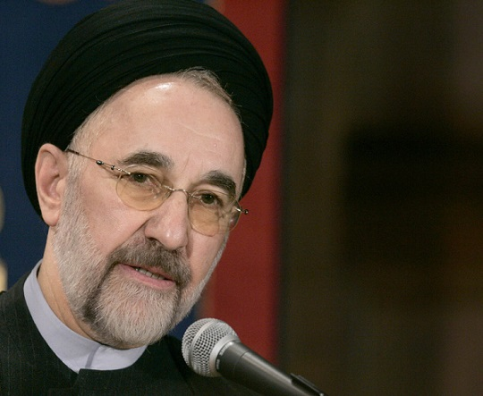

حجه الاسلام و المسلمین سید محمد خاتمی ظهر امروز سه شنبه با جمعی از اعضای کمپین ائتلاف روحانی-عارف برای فردای ایران دیدار کرد. در این دیدار آقای خاتمی ضمن تقدیر از ایثارگری آقای دکتر عارف به عنوان نماینده شایسته و بر حق جریان اصلاحات، از همه مردم ایران دعوت کردند که یاس و ناامیدی را کنار گذاشته و قاطعانه پای صندوق های رای رفته و به آقای دکتر روحانی رای دهند. در ابتدای جلسه اعضای کمپین ائتلاف گزارشی از تلاشهای دو هفته اخیر خود در جهت شکل گیری ائتلاف ارائه کردند.
متن سخنان آقای خاتمی در دیدار با اعضای کمپین ائتلاف عارف-روحانی برای فردای ایران به این شرح است :
آنچه در جریان این ماه ها و روز ها رخ داد پیدایش یک نوع عقلانیت و تدبیر ضمن دلسوزی برای کشور، مردم و تلاش برای بهبود وضعی بود که به نظر جریان اصلاح طلبی از هیچ جهت قابل قبول نیست. اصلاحات از آغاز گفته و الان هم به این موضوع اعتقاد دارد و منطق هم همین را حکم میکند که ما در دنیای امروز و در شرایط کنونی برای رسیدن به آرمان های خود هیچ راهی جز انتخابات نداریم. وقتی هم از انتخابات سخن می گوییم، و این به معنای حضور در انتخابات به همان صورتی که برگزار میشود است که البته ممکن است خیلی هم مطلوب نباشد. اما باید توجه داشت که بدیل این مساله چیز وحشتناکی است که ما نه به آن اعتقاد داریم و نه معتقدیم در صورت تحقق آن بدیل، نتیجه به نفع کشور و مردم و انقلاب و ارزش هایی است که ما از آنها دفاع می کنیم. بنابراین هیچ بدیل دیگری نداریم، یا باید بیهوده از صحنه کنار بکشیم یا باز هم می بایست چشم به انتخابات بدوزیم. البته مطلوب این است که ما به یک انتخابات خوب و خواستنی آزاد و سالم برسیم که البته برای این هم باید تلاش کرد. در عین این که ما به این نظام پایبند هستیم و به آن اعتقاد داریم و از همان پایگاه هم نظام و رفتار ها و رویه ها و گفتار ها را نقد می کنیم. ما معتقدیم که یکی از محوری ترین مسائل که دستاورد مهم انقلاب است و باید برای آن تلاش کنیم، انتخابات آزاد و سالم و واگذاری قضاوت به رای مردم هست. اما اصلاحات یعنی تدریج، اصلاحات یعنی اندک اندک پیش رفتن. در این مرحله ما دو نگاه می توانیم به انتخابات داشته باشیم. یکی اینکه انتخابات را انتخاب بکنیم برای اینکه به آنچه می خواهیم برسیم. یو دیگری اینکه در انتخابات حضورداشته باشیم تا در آنچه نمی خواهیم رخ بدهد خلل ایجاد شود. اگر ما معتقدیم که اوضاع و احوال اوضاع از ابعاد مختلف اقتصادی، سیاسی، فرهنگی و حتی با معیارهائی که انقلاب و ارزش های ما دارد؛ قابل قبول نیست، نفس اینکه این وضع تغییری کند، بهبودی پیدا کند و جنبه های منفی وضعیت کم تر شود هدف مهمی است. این معنایش این نیست که ما به قدرت برسیم بلکه قدرت را از دست جریان و اموری که به نفع انقلاب نیست خارج کنیم تا سست تر بشود یا تغییر کند. در این صورت وضعیت برای همه ما مطلوبتر خواهد شد. راه حل دیگر هم آن است که تلاش کنیم با آرمان ها، برنامه و اهدافی که خودمان داریم به قدرت برسیم.
راه حل ما در این اوضاع پیشروی با خواسته های حداقلی است. این خواسته ها عبارتند از : نجات کشور، بهبود وضع مردم، بهبود وضعیت ایران در عرصه بین المللی، بهبود وضع اقتصادی، ایجاد امید در جامعه، زدودن یاس و ناامیدی از بخش های مختف جامعه، ترمیم بی اعتمادی یا ترمیم اعتماد زیان دیده ای که میان حکومت و مردم ایجاد شده است. این ها همه هدف های خوب، اصلاحی و تدریجی است که ما معتقدیم به نفع انقلاب، به نفع اسلام، به نفع حتی حاکمیت و طبعا به نفع مردم و نیز جریاناتی که نحوه دیگری از مدیریت و اصول و معیار های ما را می پذیریند نیز هست. در این انتخابات خوشبختانه این اتفاق افتاد که از موضع دلزدگی و یاس به جایی برسیم که باید در انتخابات شرکت کرد.
در این دوره نسبت به تمام دورهها، میل به شرکت در انتخابات بیشتر ایجاد شد و جریانات تحریمی و جریانات نافی حضور در انتخابات کمکم افول پیدا کردند و به یک اجماعی رسیدیم. ما که یک روزی میگفتیم شرط حضور در انتخابات، آزادی زندانیان سیاسی است، خود زندانیان نامه نوشتند که این دغدغه رو نداشته باشید و در انتخابات شرکت کنید. این مسئله، مسئلة مهمّی بود و امید فراوانی ایجاد شد. البته اگر ایدهآل فکر کنیم، خیلی بعید است که این انتخابات مطابق خواست ما باشد؛ ولی در یک نگاه واقعبینانه، اگر شرکت در انتخابات تنها یک گام به جلو باشد باید در آن شرکت کنیم. مسئلة دوم تدبیری بود که در این زمینه به کار بردیم. هیچ گاه این طور نبود که تمام جریانات اصلاحطلب و تحولخواه و جریاناتی که بعضاً در کمپین اصلاحات هم قرار نمیگرفتند ولی آدمهای عاقلی بوند، حرف داشتند، انتقاد داشتند، حول یک ایده مشترک جمع شوند. تجمیع این نیرو و تصمیمگیری جمعی، یک تجربة بسیار مهم بود.لذا در نهایت به این جمعبندی رسیدیم که هم باید در انتخابات شرکت کرد و هم به صورت حداکثری این کار را کرد. در عین حال به فکر این هم بودیم که اگر حضور حدّاکثری امکان پذیر نشد، چه کار کنیم. روند قضایا این بود که متأسّفانه شرکت حدّاکثری در انتخابات میسّر نشد و گزینة حدّاکثری که آقای هاشمی بود و موج عظیمی هم حول ایشان ایجاد شد، در نهایت اجازة حضور در انتخابات نیافت.
در مرحله بعد دو نفر از عزیزان باقی ماندند که هم میتوانستند اهداف حداقلی جامعه و ملّت ما را تأمین کنند و هم اینکه راهکاری برای ادارة کشور در چارچوب نظم موجود داشته باشند. جناب آقای دکتر عارف که بهحق نمایندة اصلاحطلبها بود. ایشان هم خودش این ادّعا را داشت و هم در مجموعة اصلاحطلبان قرار میگرفت و بهخصوص در این مدت با مواضع بسیار خوب و روشن خود نشان داد که حرفی برای گفتن دارد، هم پایبند به اصلاحات است و هم برای انقلاب و جامعة ما دلسوز است و بهحق این صلاحیت و شایستگی را از خود نشان داد که نمایندگی جریان اصلاحات را بر عهده بگیرد. یکی هم جناب آقای دکتر روحانی بود که انصافاً مواضع شجاعانه اصلاحطلبانه گرفتند ؛ گرچه ایشان خودشان را متعلّق به اردوی اصلاحطلبان نمیدانست؛ ولی شما در مواضع ایشان دیدید که چقدر خوب مواضع را بیان کرد و در کشور امید ایجاد کرد.
این یک دستاورد بزرگ بود که بعد از حدّاقل چهار سال که اصلاحات و هر جریانی که وضع موجود را نمیپذیرفت یک طرفه تحت بمباران شدید تخریب و ممنوعیت از حتی حضور در یک عرصة محدود قرار گرفته بود چه برسد به رسانهها و به طریق اولی رسانة ملّی با حضور این دو عزیز فضایی ایجاد شد که گفتمان اصلاحطلبی در جامعة ما مطرح شد؛ نهتنها از سوی این دو بزرگوار و به خصوص جناب آقای دکتر عارف که انصافاً سنگتمام گذاشت، حتّی از زبان و سخن دیگران هم دیدید که احساس کردند مواضع اصلاحطلبانه مواضع درست و مطلوب مردم و جامعه است. این دستاورد بسیار بزرگی است. تا اینجا هم اگر ما چیزی به دست نیاورده بودیم، دستکم نشان داده شد که جامعه به کدام سو میرود و آن موجی که برای آقای هاشمی ایجاد شد، نشان داد که مردم چه میخواهند و چه نمیخواهند. این خودش مسئلة بسیار مهمی است که میتواند روش و جریان حاکمیت را اصلاح کند. چون آنها هم نسبت به اسلام و انقلاب و مردم دلسوزند.
البته در مسیر حضور در انتخابات تنگناهای زیادی پیشروی ماست ازجمله عدم وجود عدالت در امکانات برای انتخابات؛ از جمله امکانات مادی، به طوری که کسان دیگری دهها برابر این طرف امکانات داشتند و کار میکردند و آزادی بیشتری در رفتن و آمدن و تبلیغات داشتند و تبلیغات رسمی هم تقریباً به نفع آنها بود و ما هیچ کدام از اینها را به این صورت نداشتیم؛ جز در جریان انتخابات که الحمدلله بهناچار البته، فضا جوری بود که دوستان ما هم توانستند چند کلامی از حرفهایشان را بزنند.
در این مرحله ما باید به یک ائتلاف میرسیدیم و چارهای جز این نداشتیم. مسئله هم این بود که از بین این دو کاندیدایی که یکی ادعا میکرد اصلاحطلب است و یکی مواضعش مواضع اصلاحطلبانه بود، گرچه ادعای اصلاحطلبی نداشت، به سویی برویم که بهترین عملکرد را داشته باشیم. بودن آنها به طور همزمان می توانست زمینه ساز یا تحمیل شکست بر کشور شود و بعد هم بگویند که کل اصلاحات و نیز کل این موجی که میگفتید پشت سر آقای هاشمی ایجاد شده، اینها همه بیخود بود و پایگاهتان همین اندازه است. عقلانیت بزرگی به خرج داده شد و فارغ از اینکه سیر این قضیه چگونه بود به این نتیجه رسیدیم که یک نفر از این آقایان در عرصه بماند. آقای دکتر عارف با همة شایستگیهایی که داشت، کار بزرگی کرد، ایثار بزرگی کرد و الآن هم معتقدم که با بودن جناب آقای روحانی در صحنه، همة ما باید سستی را کنار بگذاریم و با همة وجود به صحنه بیاییم و رأی بدهیم. خطاب به ملّت عزیز و بهخصوص به اصلاحطلبان و جریاناتی که خواهان تحول در جامعه اند این است که به صحنه بیایند و به دکتر روحانی رای بدهندتا یک انتخابات خوب شکل گرفته و موجی ایجاد شود که دیگر امکان تغییر نتیجة کار وجود نداشته باشد.
به هر حال مسئله با عقلانیت پیش رفت و معلوم شد که همه دلسوزیم، همه دلمان برای مصلحتها و اصالتهایی که وجود دارد، میسوزد و دلمان میخواهد که ایران و ایرانی سرنوشتی بهتر از این داشته باشد که حالا دارد.
امیدوارم که شما هم موفّق باشید و کارتان را در این چند روزه ادامه بدهید و این اجماعی که حاصل شده است، ائتلافی که رخ داده است، تقویت بشود و در میان مردم هم این گونه باشد و إنشاءالله بتوانیم نتیجة خوبی را از این انتخابات بگیریم.